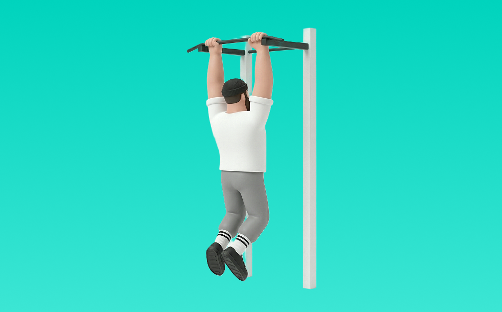

チンアップ

チンアップとは、自重を使って「引く」動作で背中（広背筋、僧帽筋、菱形筋）＋腕（上腕二頭筋）を鍛える種目です。逆手（アンダーグリップ）で行うため、上腕二頭筋の関与が高まりやすいのが特徴です。器具なしで手軽にでき、フォーム次第で負荷調整しやすく、バーにぶら下がり、引き上げてゆっくり戻す動作を繰り返します。背中の厚み・広がり作りや姿勢改善が期待できます。
- 対象部位
- 背中
- 器具
- 自重
- 記録形式
- 回数
- 別名
- 逆手懸垂 / chin up
YouTube動画
-
【初級〜中級編】誰でも出来る懸垂(チンニング)のやり方(ポイント＆注意点)です。
-
【実演解説】効果絶大な背中に鬼を宿すチンニングのやり方
-
できれば必ずデカくなるチンニングを2人の王者が徹底解説
-
【広背筋トレ】逆手懸垂の正しいやり方・フォーム・コツ | 上腕二頭筋にも効く懸垂もぜひ取り入れよう◎
-
懸垂（チンニング）の効果的なやり方｜背中をしっかり鍛える方法
-
【チンニングの全て】基本的なフォームから応用術、背中の全てを鍛えたい人向けに攻略方法を教えます。
-
【初心者向け】背中を使って正しい懸垂ができるようになるフォーム解説
-
懸垂が出来ない中年でも、懸垂で背中を鍛えられる！しかも上がれるように！代謝を高め、広背筋を作る！
-
【背中トレ】絶対に背中を大きくするチンニングの正しいやり方とは【懸垂】
-
【それNGです】懸垂：4つのエラー動作と改善方法【筋トレ】
-
【初心者】懸垂（チンニング）の正しいやり方【ビーレジェンド プロテイン】
-
【背中トレ】絶対に背中をデカくするチンニングのやり方【筋トレ】
-
懸垂は加重するべき？ジュラシック木澤が1種目目のチンニングを自重だけでやる理由
-
【筋トレ】懸垂・チンニングが苦手な方へ向けたやり方解説！
-
【筋トレ】背中を鍛える懸垂のやり方【広背筋】
-
チンニング（懸垂）フォーム⭕️❌と出来ない方のトレーニング法
-
科学的に正しい懸垂のやり方。背中を最大限に使うフォーム解説
YouTubeショート
-
鬼の背中を作る懸垂フォーム解説✨️最初の筋肉の図は何回言っても正しく修整できませんでした🙇 #gymshark
-
【山本式】懸垂ができない人のための完全解説#shorts #youtubeshorts #筋トレ #懸垂 #背中トレ #筋トレ初心者 #筋トレ大学 #筋肉博士
-
こんな懸垂はやめましょう #フィットネス #筋トレ
-
【懸垂出来ない人！】最短で出来るようになるステップ教えます！ #懸垂 #筋トレ初心者 #キャリステニクス
-
【懸垂が背中に効かない】そんな人はこの3つを意識してみて！ #筋トレ #懸垂 #背中トレ
-
【懸垂を背中に効かせるたった1つのコツ】
-
この方法で懸垂10回出来るようになる！ チャンネル登録をお願いします! #筋トレ #トレーニング #50代
-
ジムで初めてチンニングをする時ありますよね？そんな人のために持田選手（おかずもち）がトレーニング方法を伝授！#筋トレ #volix #背中トレ #ちょこっと惜しい #広背筋
-
🔰筋トレ初心者向け「チンニング解説」編🔰 #懸垂#チンニング#背中トレ
-
【SGIR】アシストチンニングはいい種目
-
正しい懸垂のやり方！ポイント5選 #shorts
-
懸垂ができない人にまずやってほしいトレーニング #自重トレーニング #カリステニクス #懸垂 #モチベーション #継続は力なり
-
【筋トレ】チンニング（懸垂）の正しいやり方 #shorts【ビーレジェンド プロテイン】 #ビーレジェンド #筋トレ #サプリメント #自重トレーニング
-
背中（広背筋）をゴツくする懸垂のやり方！悪いフォームと良いフォーム #shorts
-
こんな懸垂やっちゃってませんか？😅️ #カリステニクス #自重トレーニング #自重トレ #懸垂
-
横川尚隆のチンニング 背中みてみ？飛ぶぞ。#shorts #横川尚隆 #筋トレ #チンニング #懸垂
-
【初心者必見！！】懸垂で広背筋が効かない人はコレを試して！ #スキャプラプルアップ #筋トレ
-
懸垂は上がる必要はありません！上がれなくても背中を鍛えられる！ #筋トレ #トレーニング #懸垂
-
プルアップとチンアップの違い!!
-
初心者必見‼︎懸垂は正しく・ハードに‼︎ #筋トレあるある #筋トレ初心者 #懸垂#チンニング#背中トレ
-
【意外と知らない】懸垂の握り方による効果の違い #筋トレ #懸垂 #背中トレ #フィットネス
-
懸垂できるようになる方法はこれです【山本義徳/切り抜き】#shorts
-
科学が認めた最強の懸垂#懸垂 #チンニング #筋トレ #筋肉 #トレーニング #健康クリエイターshota
-
【武道・武術】懸垂・チンニングをレベル別で紹介！何レベルまでできる！？ #aikido ＃karate #martial #武道 #空手＃合気道＃筋トレ#selfdefens
-
でかくなった懸垂のやり方※エゴイスト
-
絶対にやってはいけないチンニング【山本義徳切り抜き】#shorts
-
正しいディップスのやり方 #フィットネス #筋トレ
-
【初心者さん気を付けて⚠️】ネガティブ懸垂でフォーム習得はできません #筋トレ
-
チンアップ（逆手懸垂）で確実に効果を出すやり方とコツ！
-
ほぼ懸垂だけで上半身を鍛えた結果#トレーニング #懸垂 #筋肉 #公園
動作方法
- 胸を軽く張り、肩を下げて構える
- 肘を引く意識で、狙う部位に負荷を乗せる
- 戻し動作もコントロールして、負荷を抜かない
動作ポイント
- 腰を反りすぎない
- 肩が前に出ないようにする
- 勢いで引かない
ワンポイントアドバイス
- 腕ではなく背中で引く感覚を優先する
- 反動が増えたら重量を一段下げる
目的別回数設定
目的や体力に応じた一般的な目安です。無理のない範囲で調整してください。
- 筋力アップ
- 1〜5回
- 筋肥大
- 6〜12回
- 持久力アップ
- 13〜20回
YouTube動画について
動画はYouTubeの公開情報をもとに表示しています。内容は投稿者によるもので、Biggrによる監修ではありません。
アプリを入手
筋トレやトレーニングの記録はBiggrにお任せください。今すぐ無料で使い始められます。